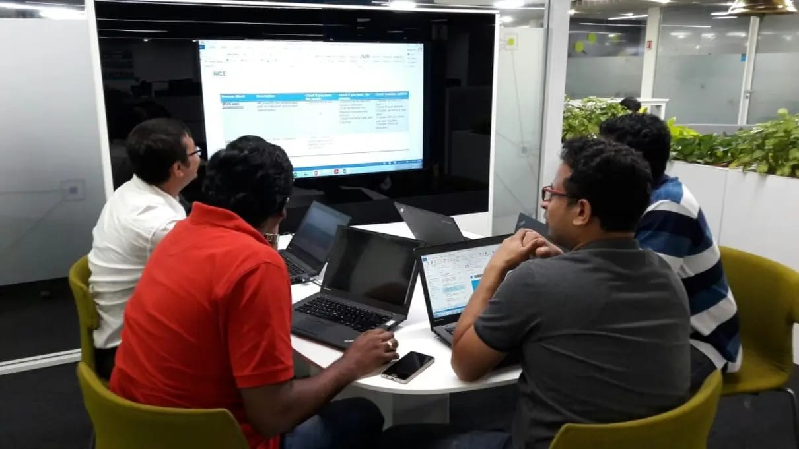
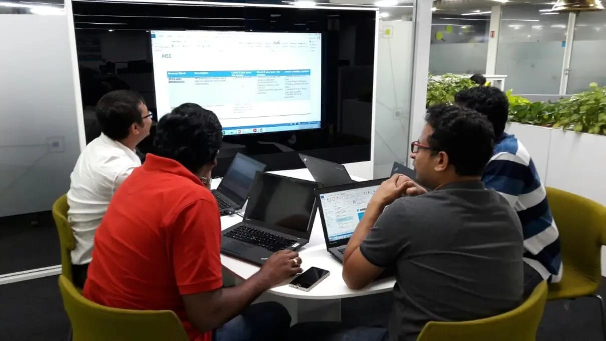

About Me
Why I’m not your vanilla Project / Program / Product Manager
I didn’t start my career with Gantt charts and stand-up meetings…
I began as a developer, which gave me a solid grounding in technology. Over time, I added layers — working as a Business Analyst to understand customer mindsets, completing my MBA to see the bigger business picture, and stepping into project management across both Waterfall and Agile frameworks.
Learning & Growing
Along the way, I’ve earned certifications like PMP, PMI-ACP, PSM-I, PSPO-I, SAFe Agilist, ICP-ACC and AWS. Each milestone sharpened my skills and expanded my toolkit, helping me grow into a versatile leader who bridges technology, business, and people.
Diverse Experience
My career has spanned Telecom, Infotainment, RPA, Product Development, Infrastructure, Banking, and Finance. I’ve never shied away from wearing different hats, and each experience has reinforced my ability to adapt, lead, and deliver impact across domains.
Reinvention & Product Leadership
Today, I am reinventing myself again — pursuing the Executive Program in Product Management from IIT Guwahati, while also exploring AI/ML. My journey isn’t about sticking to one box — it’s about evolving and building products that inspire confidence and create real impact.
 
